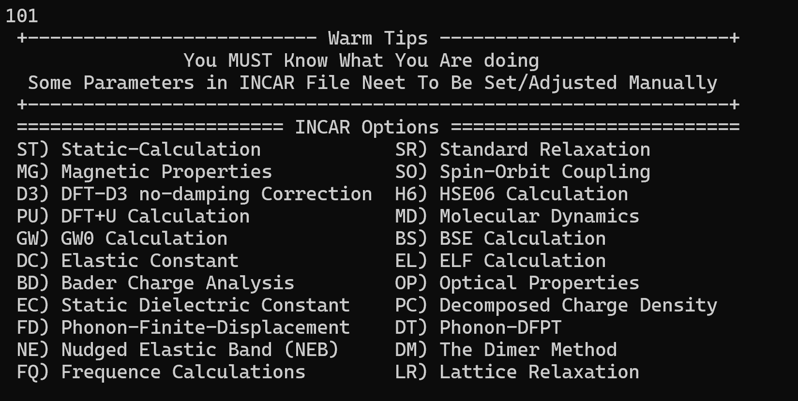
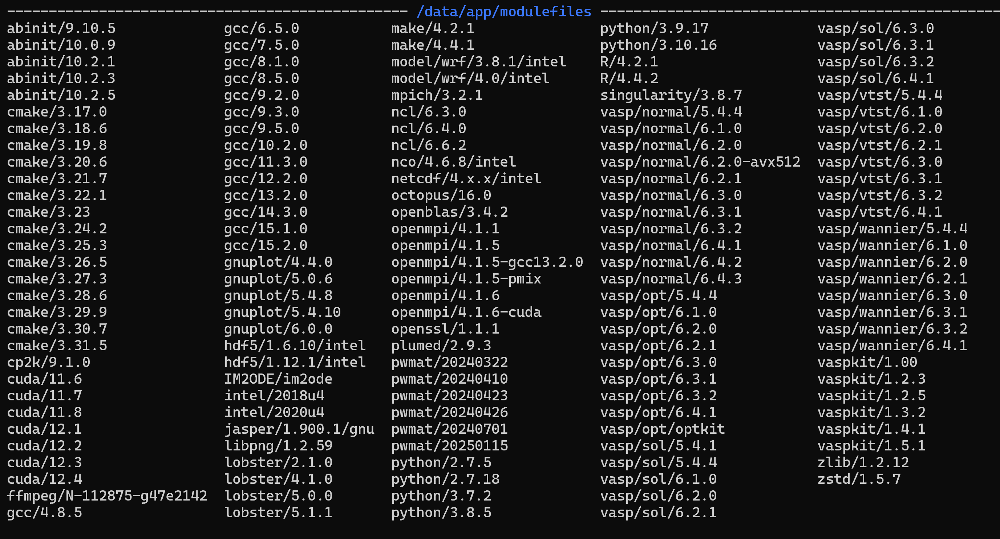
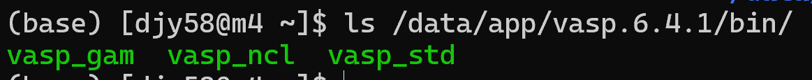

虽然放在实验my-exp部分，但是主要是关于VASP的计算，记录一下一直没有总结的能带、声子谱计算（虽然也是参考别人的教程），另外加上SOC（自旋轨道耦合）后的参数设置
CoSi材料是半金属，这次计算的两种结构空间群一致但是手性不一样，想计算考虑SOC时的能带结构，理论上自旋轨道耦合会影响能带结构。
一、能带计算 #
软件包：VASP+vaspkit

step1：结构优化 #
INCAR可以设置为：
PREC = Accurate
ENCUT = 500
IBRION = 2 #结构优化算法选择(Algorithm: 0-MD, 1-Quasi-New, 2-CG)
ISIF = 3 #既优化原子坐标也优化晶格(Stress/relaxation: 2-Ions, 3-Shape/Ions/V, 4-Shape/Ions)
NSW = 100 #优化步数
NELMIN = 5 #最小电子自洽步数
EDIFF= 1.0e-08 #自洽能量收敛判据
EDIFFG = -1.0e-08 #结构优化能量收敛判据，优化到TOTAL-FORCE都小于1E-4，（有些体系）就可以了。
IALGO = 38 #算法选择
ISMEAR = 0 #Gaussian smearing
SIGMA = 0.1 #smearing宽度
LREAL = .FALSE.
LWAVE = .FALSE.
LCHARG = .FALSE.
或者vaspkit生成选择SR，标准的结构弛豫，然后对照检查参数
运行完成后，将CONTCAR文件内容拷贝到POSCAR中，获得适合计算的结构文件
cp CONTCAR POSCAR
step2：静态自洽 #
INCAR注意事项：
# Structure control:
NSW = 0 #确保这个参数=0，才是静态自洽
# Output control:
LCHARG = .TRUE. #确保这个是TRUE
或者vaspkit选择ST静态计算，对照检查参数
同理vaspkit可以生成KPOINTS和POTCAR文件
计算完成后，会有CHGCAR文件。新建一个文件夹名字叫band，把静态自洽的INCAR、POSCAR、POTCAR、CHGCAR复制过来。
step3：能带计算 #
修改INCAR内容：
ISTART=1
ICHARG=11
LCHARG = .FALSE.
LORBIT=11 # or 10,算投影能带有用
使用vaspkit生成高对称点的KPOINTS文件，302自动生成二维结构的高对称点路径，输入303生成三维块体结构的高对称点路径。
vaspkit会生成一个KPATH.in文件，直接cp成KPOINTS文件，然后可以检查修改一下里面的内容，比如高对称点之间的采样数量。
再次提交计算
step4：数据导出 #
vaspkit输入211.生成BAND.dat文件，结合BAND.dat，BAND_GAP，KLABELS里面的信息。得到能带图
二、考虑SOC的能带计算 #
第一步：进行常规的结构优化 #
第二步：SOC静态计算 #
提取上步的结构文件，INCAR中加上SOC，进行静态计算以得到CHGCAR和WAVCAR。添加的参数为
Spin-Orbit Coupling Calculation
LSORBIT = .TRUE. (Activate SOC)
GGA_COMPAT = .FALSE. (Apply spherical cutoff on gradient field)
VOSKOWN = 1 (Enhances the magnetic moments and the magnetic energies)
LMAXMIX = 4 (For d elements increase LMAXMIX to 4, f: LMAXMIX = 6)
ISYM = -1 (Switch symmetry off)
# SAXIS = 0 0 1 (Direction of the magnetic field)
# MAGMOM = 0 0 3 (Set this parameters manually, Local magnetic moment parallel to SAXIS, 3*NIONS*1.0 for non-collinear magnetic systems)
NBANDS = (Set this parameters manually, 2 * number of bands of collinear-run) #上一步中OUTCAR中NBANDS的两倍
CoSi使用的INCAR参数：
Global Parameters
ISTART = 0 (Read existing wavefunction, if there)
ISPIN = 1 (Non-Spin polarised DFT)
ICHARG = 2 (Non-self-consistent: GGA/LDA band structures)
LREAL = .FALSE. (Projection operators: automatic)
ENCUT = 450 (Cut-off energy for plane wave basis set, in eV)
PREC = Accurate (Precision level: Normal or Accurate, set Accurate when perform structure lattice relaxation calculation)
ALGO = Normal
LWAVE = .FALSE. (Write WAVECAR or not)
LELF = .FALSE.
LCHARG = .TRUE. (Write CHGCAR or not)
ADDGRID= .TRUE. (Increase grid, helps GGA convergence)
# LVTOT = .TRUE. (Write total electrostatic potential into LOCPOT or not)
# LVHAR = .TRUE. (Write ionic + Hartree electrostatic potential into LOCPOT or not)
# NELECT = (No. of electrons: charged cells, be careful)
# LPLANE = .TRUE. (Real space distribution, supercells)
# NWRITE = 2 (Medium-level output)
# KPAR = 2 (Divides k-grid into separate groups)
# NGXF = 300 (FFT grid mesh density for nice charge/potential plots)
# NGYF = 300 (FFT grid mesh density for nice charge/potential plots)
# NGZF = 300 (FFT grid mesh density for nice charge/potential plots)
Static Calculation
ISMEAR = 0 (gaussian smearing method)
SIGMA = 0.05 # SOC 计算建议用更小的 SIGMA（0.05 eV）
LORBIT = 11 (PAW radii for projected DOS)
NEDOS = 2001 (DOSCAR points)
NELM = 60 (Max electronic SCF steps)
NSW = 0
EDIFF = 1E-08 (SCF energy convergence, in eV)
Spin-Orbit Coupling Calculation
LSORBIT = .TRUE. (Activate SOC)
GGA_COMPAT = .FALSE. (Apply spherical cutoff on gradient field)
VOSKOWN = 1 (Enhances the magnetic moments and the magnetic energies)
LMAXMIX = 4 # Co 是 d 电子，必须设为 4
ISYM = -1 # 关闭对称性（SOC 可能破坏部分对称性）
SAXIS = 0 0 1 (Direction of the magnetic field)
# MAGMOM = 0 0 3 # CoSi 是非磁性的，不需要设置局部磁矩
NBANDS = 192 # grep 'NBAND' OUTCAR的结果是96
⚠️ 注意：不要手动设置
LNONCOLLINEAR = .TRUE.，因为LSORBIT = .TRUE.已经隐式启用了它。显式设置反而可能引起冗余。
第三步：能带计算 #
设置上一步中的INCAR文件中ICHARG=11读取上一步的CHGCAR，添加常规能带计算时的参数设置
[!CAUTION]
VASP计算版本不兼容 #
开始只调整了INCAR文件的参数，计算结果一直报错：
ERROR: non collinear calculations require that VASP is compiled
without the flag -DNGXhalf and -DNGZhalf
这个错误 与 INCAR 参数设置无关，而是因为当前使用的 VASP 可执行文件**（binary）是在编译时启用了 -DNGXhalf 和 -DNGZhalf 优化选项的版本， **而这些优化选项与非共线磁性计算（包括自旋轨道耦合 SOC）不兼容。
🔍 错误原因详解 #
-DNGXhalf/-DNGZhalf是 VASP 编译时的优化标志，用于减少 FFT 网格在 x/z 方向的内存占用（仅适用于 共线自旋或非磁性计算）。- 当开启 SOC（
LSORBIT = .TRUE.） 时，VASP 自动启用非共线自旋模式（noncollinear magnetism），此时必须使用 完整 FFT 网格（full grid），不能使用 half-grid 优化。 - 因此，编译时带有
-DNGXhalf的 VASP 二进制文件无法运行 SOC 计算。
[!IMPORTANT]
module avail 查找可用软件包

📌 关键点：SOC 计算必须使用 non-collinear（ncl）版本的 VASP，而不是标准（std）或 gamma-only（gam）版本。
修改脚本sub.sh中的版本：
#!/bin/sh
#SBATCH -N 1
#SBATCH -n 96
#SBATCH --ntasks-per-node=96
#SBATCH --partition=djy3
#SBATCH --output=%j.out
#SBATCH --error=%j.err
#SBATCH --job-name=2_band-hsh
source /data/app/intel2022.3.1/setvars.sh
export PATH=/data/app/vasp.6.4.1/bin:$PATH
ulimit -s unlimited
mpirun -np $SLURM_NPROCS vasp_ncl
可以运行
🔍 验证 vasp_ncl 是否存在
#
在终端中运行：
ls /data/app/vasp.6.4.1/bin/
确认输出中包含：
vasp_std vasp_gam vasp_ncl
如果没有 vasp_ncl，说明该 VASP 安装未编译 non-collinear 版本，需要联系管理员或使用其他模块（如 vasp/normal/6.4.1 可能默认链接到 vasp_ncl）
